Concept Note
The collection seamlessly blends Indian tradition with modernity, merging sustainability with style. Drawing inspiration from Kantha of Bengal, Gudri from Rajasthan, and inculcating embroidered patchwork from Gujarat and Madhya Pradesh, it offers a unisex range of smart corporate-casual wear.
Each meticulously crafted piece is fashioned from discarded denim and industry waste cotton fabrics, embodying a commitment to responsible fashion practices. By repurposing these materials, the collection reduces waste while granting them renewed purpose — honouring the Indian legacy of preservation and empowering the traditional crafts passed down through generations.
The final ready-to-wear range focuses on trousers, shirts and jackets, available in the reclaimed blue, black and white of the discarded fabrics themselves.
Inspiration & Mood
"Prioritizing and consciously working towards building a better future is what sustainable living is all about. It is a step-by-step process and time-consuming, but the more you try involving green life within you, the greener will be the life around you."
Set against the reminder that "fast fashion is not free — someone, somewhere, is paying," the collection strives to create a sense of balance and ease by contradicting the maximalist, herd mentality of the past and embracing a more minimalistic approach that helps the wearer appreciate their individuality — a quiet, relaxed, hopeful register running through every garment.
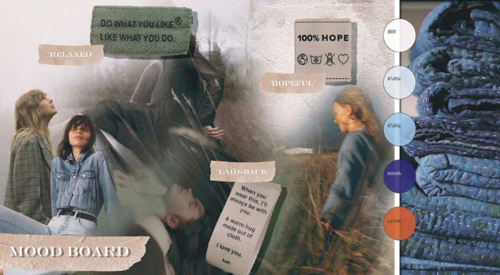
Fabric & Colour Board — Zero Waste Fashion
The fashion industry creates a massive amount of waste that negatively impacts the environment. This collection incorporates the idea of zero-waste fashion by using pre-existing clothing and other items and restructuring them into new garments — taking unwanted, thrown-away and pre-used jeans and upcycling them into a semi-formal wear collection.
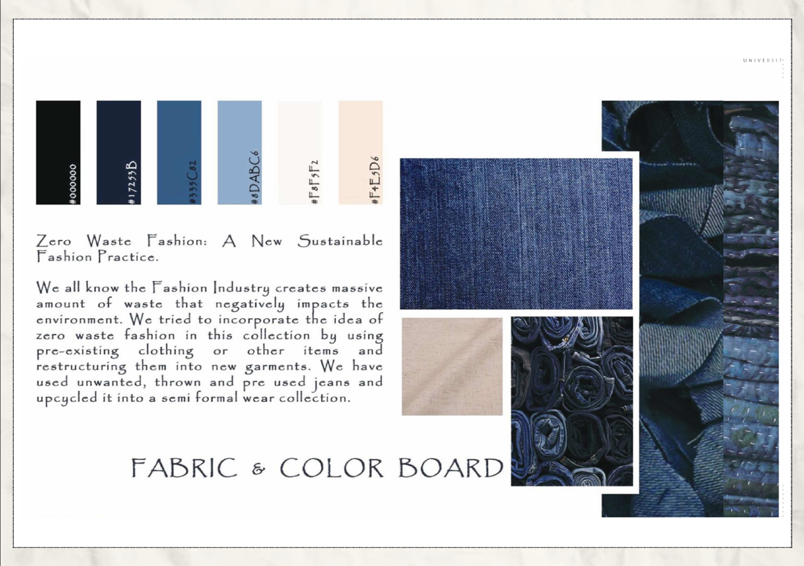
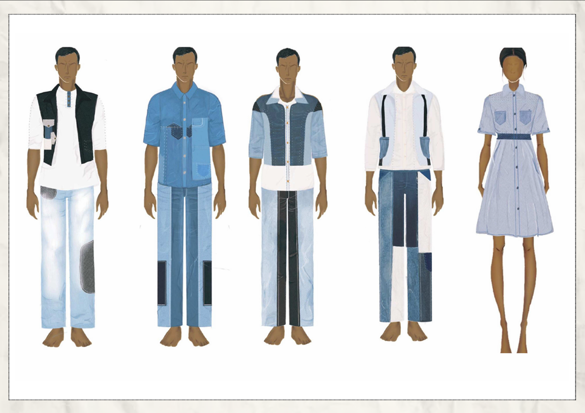
Silhouette & Garment Details Board
Kimono-inspired wrap coats, double-breasted colour-blocked blazers, oversized utility overcoats and shirt-dresses were developed around a shared surface-design language: multiple types of pockets, convertible collars, visible patchwork panelling, highlighted running stitches, and varied hem slits — all details that let the patchwork construction read as an intentional design feature rather than a repair.
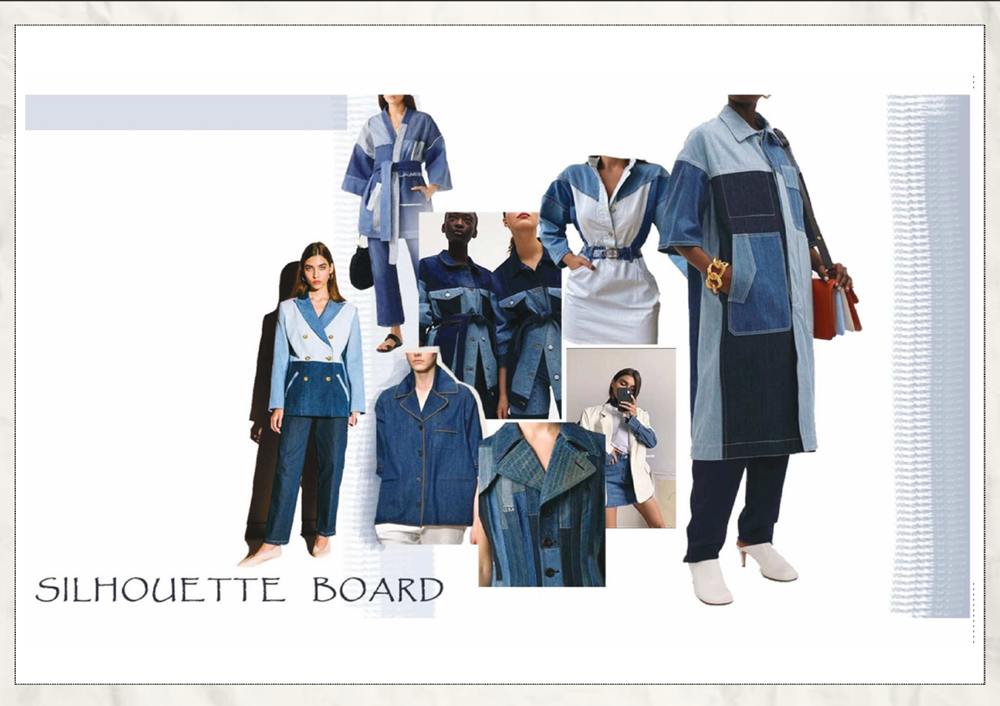
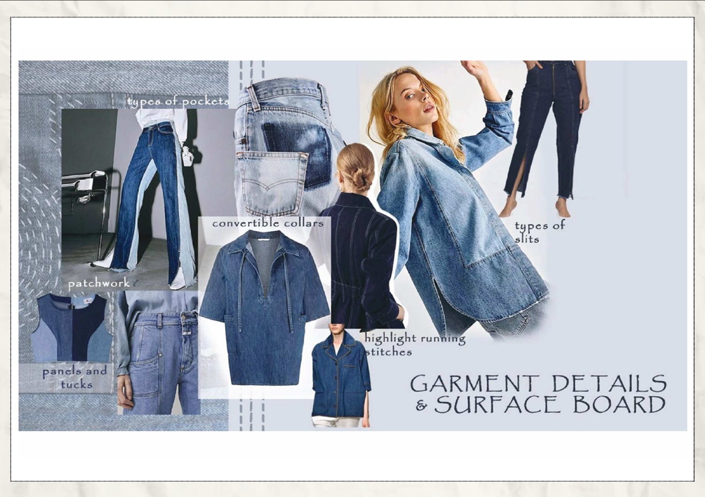
Design Development & Final Range
The range moved through two full design-development sheets before arriving at Final Range 2.0 — five front-and-back technical flats for a unisex capsule of vests, patchwork shirts and panelled trousers.
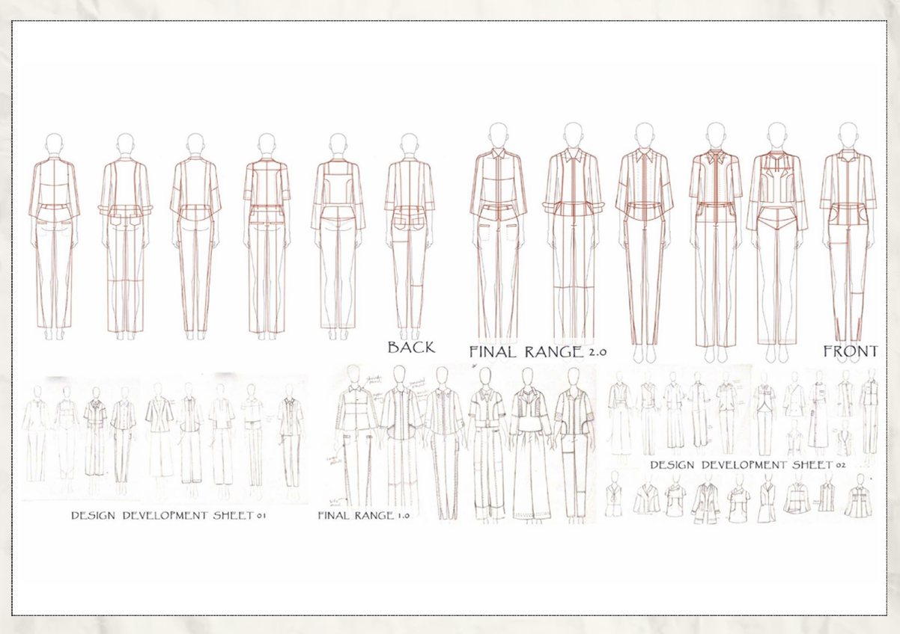
| Garment | Construction Detail |
|---|---|
| Reversible jacket | Double patch-pocket detailing, running stitch and panelling |
| Straight-fit kurta shirt | Denim placket, stand collar, panelling at sleeves, running stitches |
| Convertible-collar shirt | Mid-armhole panel at back and front, ¾ sleeve length, patch pocket on back sleeve |
| Sleeveless shirt | Pure white cotton (sourced from industry waste), flat piping, back yoke, blanket stitch |
Final Photoshoot
The completed range was styled and shot on both male and female models, worn with tan leather accessories to reinforce the "smart corporate-casual" positioning.
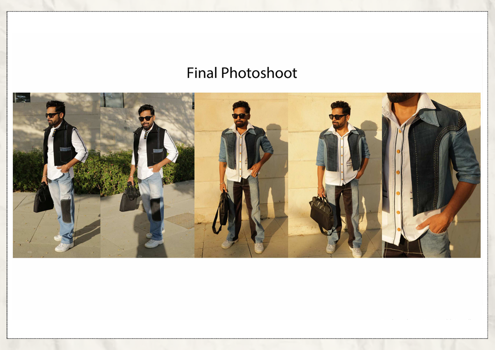
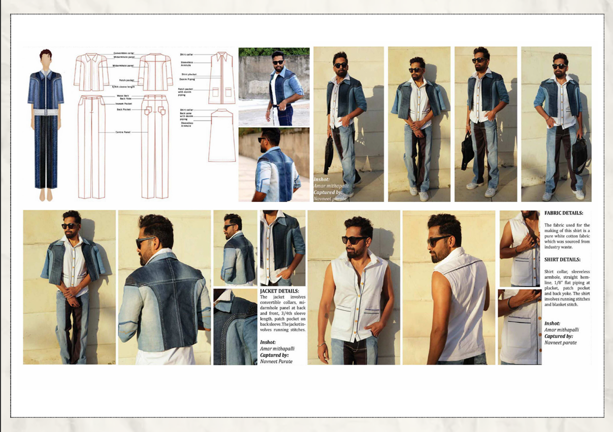
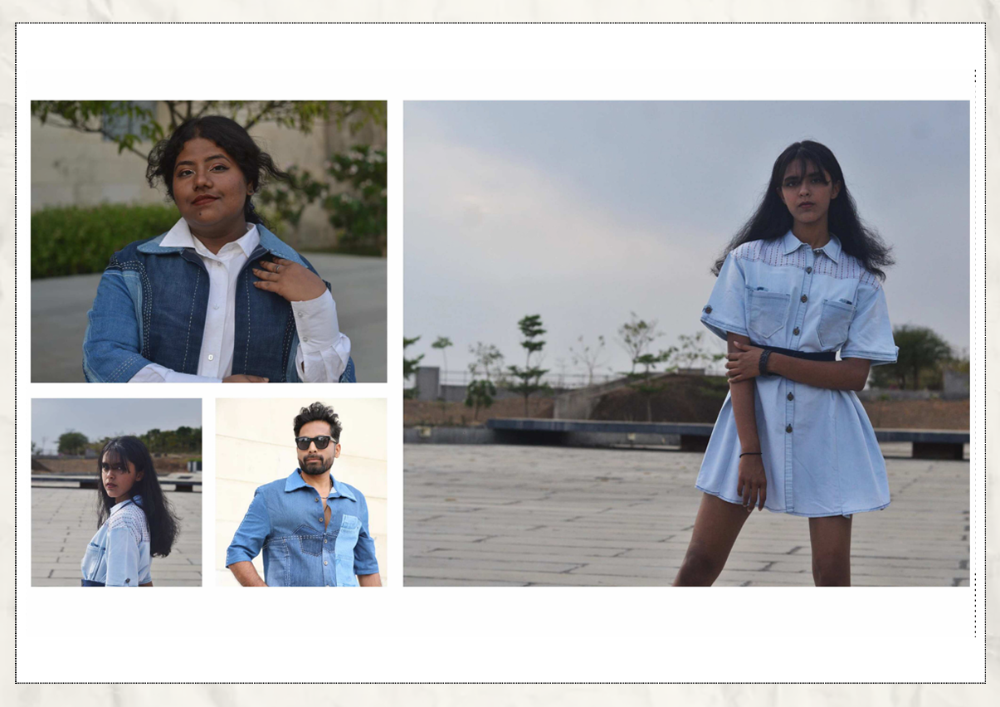
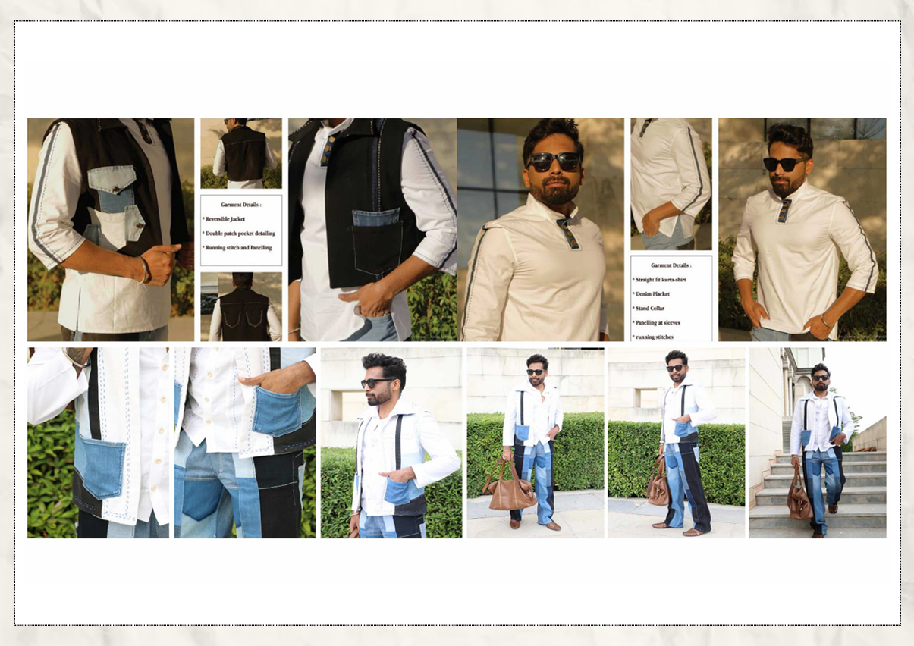
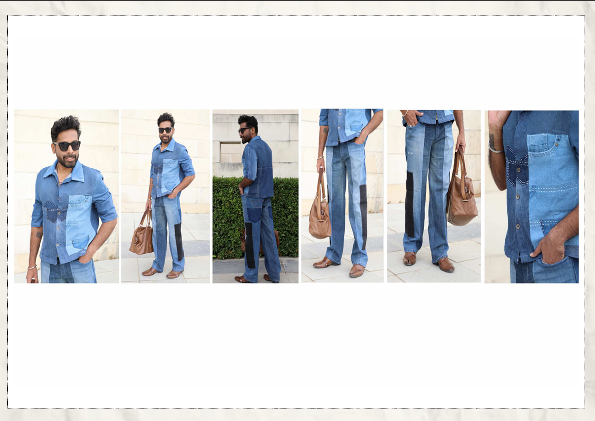
Documents
Full sustainable denim collection portfolio — concept, mood board, fabric development and final photoshoot.